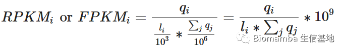
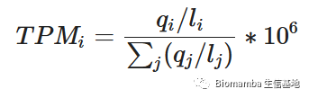
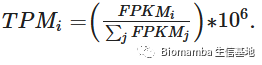
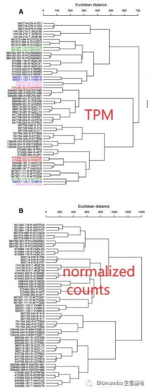
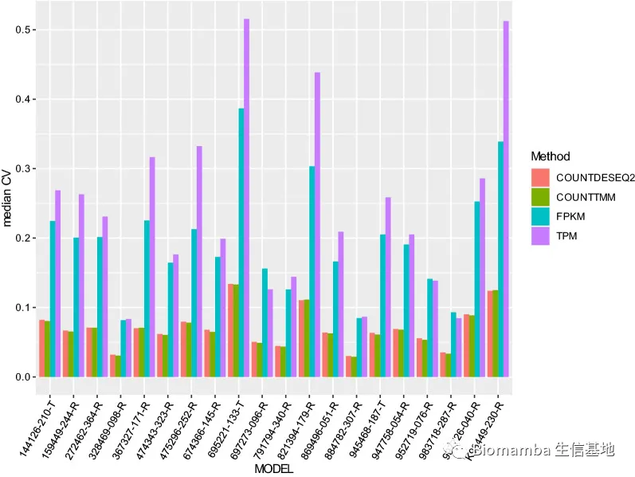
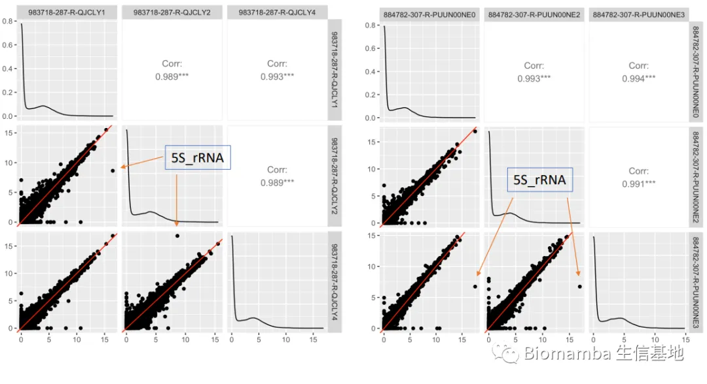
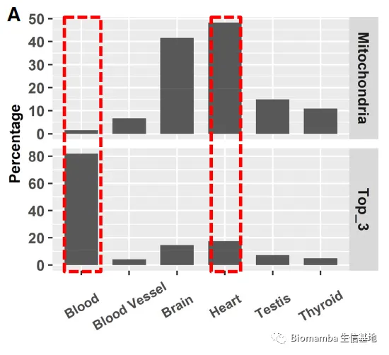
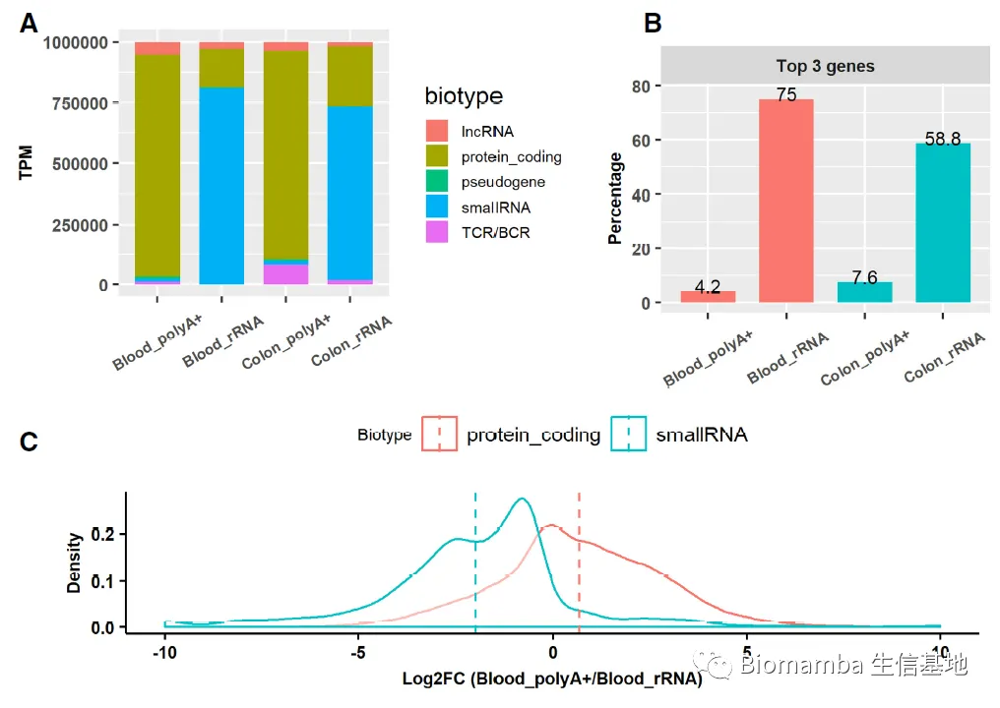

FPKM,TPM, Counts: 谁更适合做差异分析？
原文：https://mp.weixin.qq.com/s?__biz=MzAwMzIzOTk5OQ==&mid=2247500475&idx=2&sn=22aca40cd46e12f9f41714fecd964bb4&chksm=9b3cbbebac4b32fd15490dfc65357abfb63dd77a497e8605228bce0162f9175679fee291484f#rd 合集：Bulk RNA-seq / 文献速递
写在前面
最近在处理一批Bulk RNA-Seq的数据，在计算表达量以供差异分析时犯了难：TPM、FPKM、count都是Bulk RNA-Seq中基因定量的指标，那么其中哪个最能够展示基因最真实的表达情况并适用于下游的组间差异分析呢？Biomamba动手查了查，遂有此文。
基本介绍
RNA-Seq早已替代了微阵列技术成为转录组研究最常用的技术，数据处理的流程一般是fastq→SAM/BAM→gene count→gene expression。其间的每一步都涉及到很多的算法与工具，而它们的正确使用便是大家探寻生物学意义的关键，本文的主要研究内容便是"gene count→gene expression"这步。在这之前，我们需要先思考为什么gene count不能与基因的表达量划等号。在RNA-Seq的建库流程中，cDNA通常被超声破碎为小片段并连上接头用于illumina的测序，那么常用的150bp双端测序显然小于大部分cDNA的长度，所以大家RNA-Seq测序得到的reads需要回贴到基因组以获取每个gene被比对到的reads数(这就是gene count)。这时，由于每个基因的cDNA长度不同，因此单纯的比较各个基因的reads数是十分“不公平 ”地(cDNA长度更长的基因容易获得更多的reads)。并且整体文库更大的样本也会获得更多的reads，例如A样本测了1百万条reads，而B样本只测了一万条reads，显然单纯的将gene count作为表达量将会造成大量的基因在A样本中较B样本上调，这显然不是由于生物学因素造成的，而是由文库大小引入的。因此"gene count→gene expression"的转换需要充分地考虑到基因长度、文库大小等因素，gene count应该被科学地normalize。在这种情况下，TPM与FPKM算法被提出。FPKM/RPKM(fragments/reads per kilobase of exon per million mapped fragments/reads)计算公式为：

其中q i为基因i的原始reads或fragments数，l i为基因i的转录本长度，q j为整个文库的reads或fragments(双端测序中配对的两个reads)数，那么这个公式得到的值就是每百万reads或fragments获得对应基因的一千个bp转录本包含的reads数(稍微有点不通顺，大家还是看公式：RPKM=10*9(当前基因比对到的总reads/(文库比对到的总reads*当前基因转录本长度)))，这一指标充分地考虑到了样本内总文库大小与基因长度。但这一指标将每个样本的总reads或fragments作为分母之一显然没有考虑到各样本文库大小之间的差异，因此TPM应运而生：
汉化后的公式应是TPM=10*6(当前基因比对到的总reads/当前基因转录本长度)/sum(每个基因比对到的总reads/每个基因的转录本长度)，如果你没能看出TPM和FPKM有什么不同，那么下面这个TPM与FPKM的转换公式应该看起来比较直接，TPM看起来就是百分比版的FPKM*10**6，这么看起来TPM似乎更合理，其不仅对每个基因进行了"normalization"，更是对总体文库的大小进行了"normalization"，保证了各样本的TPM总和近似一致。
文献调研
既然FPKM和TPM考虑地这么周全，那么它们是否适合用于差异分析呢？以“TPM”与“FPKM”为关键词，仅找到了两篇匹配度比较高的文章，一篇题为"TPM, FPKM, or Normalized Counts? A Comparative Study of Quantification Measures for the Analysis of RNA-seq Data from the NCI Patient-Derived Models Repository"很好地展现了这三个常用的“表达量”在表现组内的一致性与组间的异质性方面的优劣。作者的态度很清晰，其认为用TPM、FPKM为表达量仅适合用于样本内不同基因表达量的高低比较，而不能用于同一基因在不同样本、不同分组间的比较。作者对来源于20种PDX模型的61个转录组样本分别计算了TPM、TPM的Z-score、FPKM、normalization counts，通过欧式聚类可以发现TPM的结果无法将不同PDX模型的样本聚为一支(着色部分即被打乱的PDX分组)，但通过DESeq2获得的normalized counts则可以：

在计算变异系数时也可以明显发现无论是通过DESeq2还是TMM生成的normalized counts，各个PDX模型中的效果都要明显好于FPKM与TPM：
那么思考就来了，为什么看起来很合理的FPKM与TPM反而不能保证组内的一致性？作者用这两个指标在同一组的三个样本内进行了相关性分析，结果显示一些表达量比较高的基因，比如下图标出的5S_rRNA在不同的样本中的值不遵从整体的线性关系、较为离群。这样答案似乎就有了，在计算TPM与FPKM时默认矫正了文库大小带来的影响 ，但是，文库的大小显然是会影响reads的构成，因为一些表达量高的管家基因更容易被测序，而它们在整体文库中的占比通常很高(例如心肌细胞中的13个mRNA表达量约占转录本总数的48%)，这些基因不仅会反过来影响总体文库的大小与组成，更让那些低表达量的基因成为了“受害者”(一个恒定低表达的基因可能会由于高表达基因的变动导致其看起来发生了表达量的变化)。有的同学可能会说了，从生物学角度来说这些高表达的基因作为管家基因来说相对恒定，在做QPCR和WB的时候还会拿它们做内参呢；这固然有道理，但内参基因也不完全就表达恒定，例如GAPDH就会在糖尿病、缺氧等条件下表达量升高，对于其它内参基因来说也有影响它们表达的生物学因素，而这些因素都可能导致TPM、FPKM的“校准”失效。还有的同学可能会认为，从测序的角度来说，所有样本不是都默认测同样大小的fastq文件吗，那文库大小也是一样的呀？这只是理想状态，实际情况中各样本无论是测序文件大小、测序质量、双端测序的配对率均会有所不同，而测序本身就是一种“抽样调查”，自然会随文库的大小而引起基因表达量的波动 。总之，TPM和FPKM没有考虑到高表达基因波动以及有效reads总数对基因表达量的影响。
不过这篇文章用本就具有高度异质性的肿瘤RNA-Seq数据来评价组内一致性似乎有些欠妥，我们来看看其他人的观点，另一篇题为"Misuse of RPKM or TPM normalization when comparing across samples and sequencing protocols"的文章如何来描述RPKM、TPM、normalization的应用场景。这里作者就先举了一个比较极端的例子，在不同的组织中线粒体转录本和表达量前三的转录本的占比波动非常大，这与我们在上一篇文章中讨论过的观点一致。显然，这种情况会导致其他基因的TPM值计算“失真”。
另外，不同建库方法得到的TPM值差别也十分巨大，因此作者认为TPM和FPKM可用于跨样本差异分析的前提为：1.样本的取材一致。 2.mRNA文库的提取建库方法一致3.文库大小、高表达转录本如线粒体RNA、球蛋白RNA等reads数一致
显然这些都是难以达到的条件，因此该文作者也是建议用基于counts的差异分析 ，即DESeq2[3]或edgeR[4]，而不要用TPM与FPKM这类经"normalization"后的值。对于具体计算过程以及这两个软件感兴趣的同学可以先看看参考文献，我们后续在制作Bulk RNA-Seq教程时会详细介绍。
参考：
[1]Zhao Y, Li MC, Konaté MM, Chen L, Das B, Karlovich C, Williams PM, Evrard YA, Doroshow JH, McShane LM. TPM, FPKM, or Normalized Counts? A Comparative Study of Quantification Measures for the Analysis of RNA-seq Data from the NCI Patient-Derived Models Repository. J Transl Med. 2021 Jun 22;19(1):269.
[2]Zhao S, Ye Z, Stanton R. Misuse of RPKM or TPM normalization when comparing across samples and sequencing protocols. RNA. 2020 Aug;26(8):903-909.
[3]Love MI, Huber W, Anders S. Moderated estimation of fold change and dispersion for RNA-seq data with DESeq2. Genome Biol. 2014;15(12):550.
[4]Robinson MD, McCarthy DJ, Smyth GK. edgeR: a Bioconductor package for differential expression analysis of digital gene expression data. Bioinformatics. 2010 Jan 1;26(1):139-40. doi: 10.1093/bioinformatics/btp616. Epub 2009 Nov 11. PMID: 19910308; PMCID: PMC2796818.

如何联系我们
 公众号后台消息更新不及时，超过48h便不允许回复读者消息，这里给大家留一下领取资料、免费服务(有root权限的共享服务器,你没有体验过的全新版本!)的微信号 ，方便各位随时交流、提建议(科研任务繁重，回复不及时请见谅)。此外呼声一直很高的交流群 也建好了，欢迎大家入群讨论：永久免费的千人生信、科研交流群
公众号后台消息更新不及时，超过48h便不允许回复读者消息，这里给大家留一下领取资料、免费服务(有root权限的共享服务器,你没有体验过的全新版本!)的微信号 ，方便各位随时交流、提建议(科研任务繁重，回复不及时请见谅)。此外呼声一直很高的交流群 也建好了，欢迎大家入群讨论：永久免费的千人生信、科研交流群
大家可以阅读完这几篇之后添加给生信入门初学者的小贴士 如何搜索公众号过往发布内容

 您点的每个赞和在看，我都认真当成了喜欢
您点的每个赞和在看，我都认真当成了喜欢